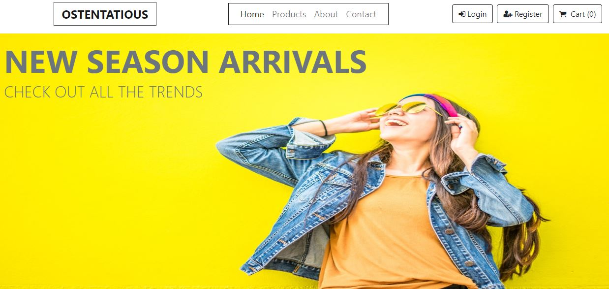
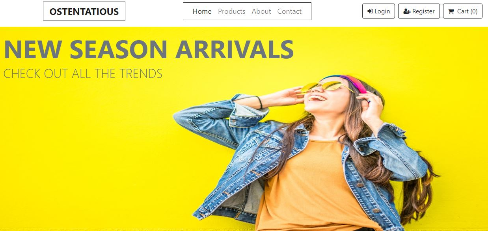

I AM
PERE AFEZU
Hire me
ABOUT ME
PERE AFEZU
Hi. I am a full stack developer I am very research driven and have passion for data analysis and Design. I put in-depth intuition into design and User Experience (UX).I have the ability to learn fast and adapt very quickly to challenging scenarios and situations. I practice Satyagraha which is Sanskrit for "Holding firmly to truth". Yes.so, I am a Satyagrahi. I am fascinated by deadlines and produce optimum result before deadlines. I have considerable amount of years of IT work experience ranging from self-trainings, institutions and companies.I love Tea and Coffee
PORTFOLIO


 

SERVICES

Website Development
I build innovative and creative web solutions with modern web technique. i throw in a little buisness ingenuity in web design and development for my clients. A critical thinker turning business ideas into high-end digital products.

Software
Development
Building custom software solutions tailored to your buisness.
"If we want users to like our software, we should design it to behave like a likeable person.Usability's strength is in identifying problems, while design's strength is in identifying solutions"
Alan Cooper
Data Analytics
Descriptive, Diagnostic and Predictive data analytics using creative insights garnared from experience in data analytic solutions and projects. Interpreting and analyzing data to drive buisness growth
CONTACT
If you need maximum productivity and you need to meet deadlines!
Let's discuss coding solutions; frontend, backend over capuccino! this weekend!